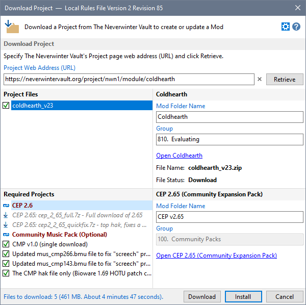
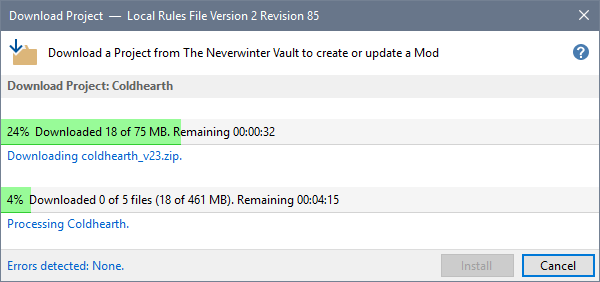
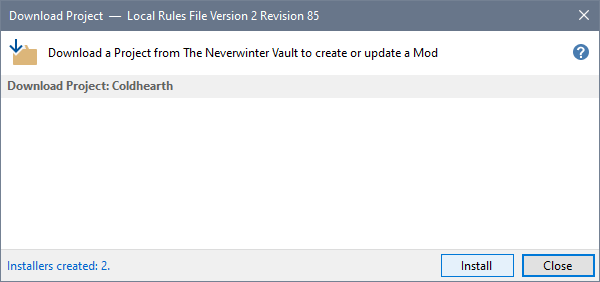
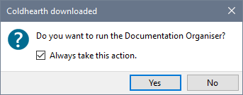
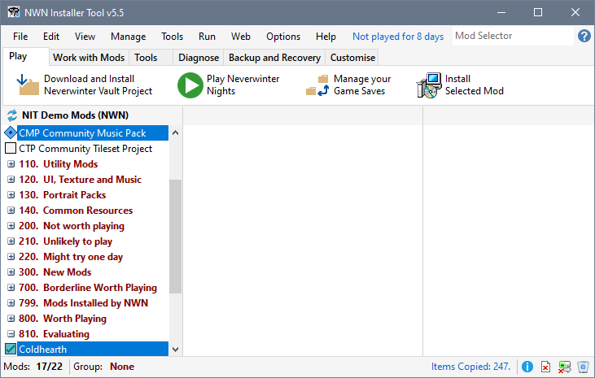
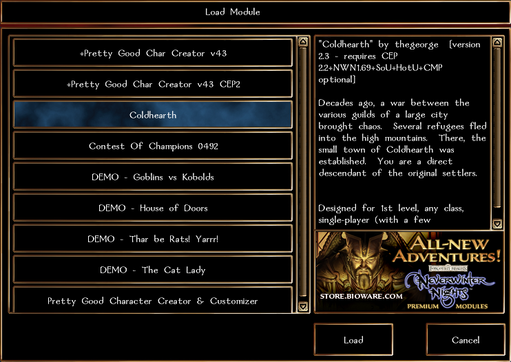

Click Download or Install when you are satisfied with the Mod Folder, Group and which files are marked for download.

The Installer Tool displays download progress information.

Additional messages are displayed when you update an existing Mod.
If you clicked Download, then you are given the option to Install the downloaded files or Close the Download Project dialogue.

The first time you download a Project, you asked whether you want to run the Documentation Organiser. This message will be displayed again if you clear the tick next to Always take this action. You can also change this behaviour on the Configuration page in Advanced Settings.

After you click Install, the Mods created by the Project Download are installed and selected in the Installer Tool window.

You can examine each of the Mods created or select Neverwinter Nights from the Run menu and load the Mod you downloaded.

Specify the Neverwinter Vault Project page
Review and customise download information
Download and Install files